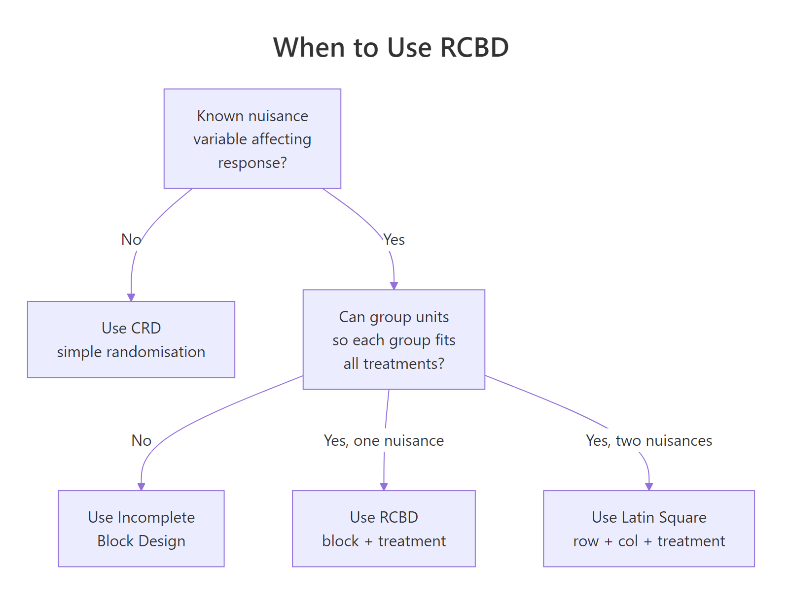
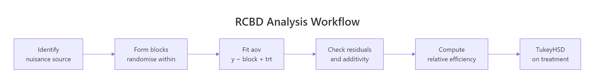

Randomized Complete Block Design (RCBD) in R: Block Nuisance Variability
A randomized complete block design (RCBD) groups experimental units into homogeneous blocks before randomly assigning every treatment to one unit per block. Pulling block-to-block variability out of the residual term sharpens the F-test for the treatment effect and protects you from a known nuisance source.
What does an RCBD let you detect that a CRD misses?
Picture four fertilisers tested on a long sloping field. Soil moisture rises down the slope, so any random plot layout pollutes the treatment comparison with moisture noise. RCBD groups plots into strips that each cover the full slope and randomises the four fertilisers inside every strip. The same yield numbers, analysed with the block term in the model, often turn from a borderline result into a clean significant difference. Below is the side-by-side proof on simulated data.
Two models, identical response values, very different verdicts. The CRD analysis shows a treatment F of 0.81 and a p-value of 0.51, looking like the fertilisers are interchangeable. The RCBD analysis pulls the soil gradient out of the residuals, the treatment F jumps to 18.68, and the p-value drops to about 0.00008. The "noise" was structured all along, and naming it as a block recovered the signal.
Try it: Pull the residual mean square from both fit_crd and fit_rcbd and compute the ratio. Save the ratio as ex_mse_ratio. Confirm it is comfortably above 1 (the RCBD residuals are much smaller).
Click to reveal solution
Explanation: The CRD residual mean square absorbs the entire soil gradient, the RCBD's does not. The ratio of about 23 is the direct mechanical reason the F-test verdict flips: smaller denominator means larger F.
How do you randomize treatments inside each block?
Two rules govern the layout. Every treatment must appear exactly once per block (that is the complete in RCBD), and the order of treatments inside each block must be drawn at random and independently from every other block. The randomisation is what licenses the inference: it prevents any unmeasured nuisance from systematically lining up with a treatment.
You build the layout in R by grouping plots by block and shuffling the treatment vector inside each group.
Block 1 happens to draw the order C, D, B, A; block 2 draws A, B, D, C. Each block contains all four treatments exactly once and the within-block order is independent across blocks. This layout_df is the field map you would carry into the experiment, telling each plot which fertiliser to receive.

Figure 1: Decision flow for choosing between CRD, RCBD, Latin Square, and incomplete block designs based on what you know about nuisance variability.
Try it: Re-randomise layout_df with set.seed(42) and check that every block still contains exactly one of each treatment. Save the result as ex_layout.
Click to reveal solution
Explanation: sample(seq_len(n())) produces a permutation of 1 to n inside each group_by(block) group. Because the assignment is a permutation, the block contains every treatment exactly once.
How do you fit and read the RCBD ANOVA in R?
The RCBD model is purely additive. The mean response in plot $j$ of block $i$ is
$$y_{ij} = \mu + \tau_i + \beta_j + \varepsilon_{ij}$$
Where:
- $\mu$ is the grand mean
- $\tau_i$ is the effect of treatment $i$
- $\beta_j$ is the effect of block $j$
- $\varepsilon_{ij}$ is the residual, assumed normal with constant variance
Note what is missing: there is no $\tau\beta$ interaction term. With one observation per block-treatment cell, an interaction would consume every residual degree of freedom and leave nothing to test against. The single replicate inside each block is the whole reason RCBD is cheap, and the assumption you pay for it is additivity.
The full ANOVA table comes from aov() plus summary().
Three rows, three F-tests. The block row shows the soil gradient is enormous (F = 89.2), exactly the bookkeeping we hoped for: 84 units of variation that would have been residual under a CRD are now correctly attributed to the strip. The treatment row keeps the small but real fertiliser effect (F = 18.7, p < 0.0001). Residuals carry only 2.82 units of sum-of-squares across 12 degrees of freedom, giving a tight mean-square of 0.235 against which the treatment F is computed.
You can fit the same model with lm() if you want to inspect coefficients or get effect sizes by hand.
Block accounts for 84% of total variation, treatment for 13%, residual for the remaining 3%. Eta-squared makes the magnitude of the block effect explicit and tells the story the F-test alone cannot: the soil gradient is the dominant source of variation in this field, and accommodating it via blocking is the most consequential modelling decision in the analysis.
block:treatment in a single-replicate RCBD. Writing aov(yield ~ block * treatment, data = plot_df) consumes all residual degrees of freedom (the design has only one observation per cell) and leaves zero df for the F-test. R will silently fit it and return NaN p-values. If you need to test interaction, you must add replicates per block-treatment combination or move to a different design.Try it: Refit the RCBD model with the term order reversed: yield ~ treatment + block. The ANOVA table should be byte-identical to the original because the design is balanced. Save the new fit as ex_fit.
Click to reveal solution
Explanation: R's default Type I sums of squares depend on order, but only when factors are correlated. In a balanced RCBD, block and treatment are orthogonal, so each row of the ANOVA table holds the same SS regardless of which is fitted first.
How do you check the RCBD model's assumptions?
Three assumptions sit underneath every RCBD F-test: residual normality, homogeneous variance across treatments, and additivity of block and treatment effects (the missing interaction term). The standard four diagnostic plots cover the first two.
The Residuals-vs-Fitted panel should show a flat lowess line and an even vertical band; a funnel suggests heteroscedasticity. The Q-Q plot of standardised residuals should fall on the diagonal; systematic curvature flags non-normality. Scale-Location lets you confirm the spread is constant. Residuals-vs-Leverage flags any single block-treatment cell that is dragging the fit.
plot(fit_rcbd) and not plot(yield ~ treatment). Once the block has been removed from the response, what is left is the pure measurement noise the model assumes is normal and homoscedastic.The third assumption, additivity, has its own quick test. The Tukey 1-df test for nonadditivity refits the model with one extra parameter built from the cross-products of fitted block and treatment effects; if that single df is significant, the additive RCBD model is mis-specified.
The 1-df nonadditivity test returns p = 0.099, just above the conventional 0.05 cutoff, so we narrowly fail to reject the additive model: there is no convincing block-by-treatment interaction, though the marginal p-value is a reminder that the assumption is not bullet-proof here. Shapiro-Wilk's p of 0.49 keeps the normality assumption intact, and Bartlett's p of 0.36 confirms variance is comparable across the four fertilisers. The F-tests in the previous section can be trusted.
Try it: Run shapiro.test() on the residuals of the CRD fit (fit_crd) and on the RCBD fit. Save the two p-values to ex_p_crd and ex_p_rcbd. Which is closer to a normal distribution?
Click to reveal solution
Explanation: Both p-values are above 0.05, so neither residual set fails normality outright, but the RCBD residuals score the higher p-value. That is the expected pattern: the CRD residuals carry the systematic block effect on top of the noise, which nudges them away from a clean normal shape.
How efficient was the blocking? (Relative efficiency vs CRD)
You spent design effort to identify and form blocks, and you paid for it in degrees of freedom. The natural question is: did blocking pay off? The answer is captured by the relative efficiency of blocking, a single number that says "the RCBD with my $n$ plots gave me the same precision as a hypothetical CRD using $n \times \text{RE}$ plots."
The standard formula uses the mean squares from the RCBD ANOVA table:
$$\widehat{MS_E^{CRD}} = \frac{df_b \cdot MS_b + (df_t + df_e) \cdot MS_e}{df_b + df_t + df_e}$$
$$\text{RE} = \frac{(df_e + 1)(df_e^{CRD} + 3)}{(df_e + 3)(df_e^{CRD} + 1)} \cdot \frac{\widehat{MS_E^{CRD}}}{MS_e}$$
Where:
- $MS_b$, $MS_e$ are the mean squares for block and error in the RCBD
- $df_b$, $df_t$, $df_e$ are degrees of freedom for block, treatment, and error in the RCBD
- $df_e^{CRD} = df_e + df_b$ is the error df the CRD would have had
- The first ratio is Fisher's correction: it shrinks RE slightly to account for the cost of estimating extra block parameters
RE of 18.94 means a completely randomised version of the same experiment would have needed roughly 19× as many plots to match the precision RCBD bought us. That is overwhelming evidence the soil gradient was a worthwhile thing to block on. In real field-trial reports an RE between 1.05 and 5.0 is typical; anything above 1.05 justifies the design overhead.
Try it: Pretend the block effect is much weaker. Replace block_effect with c(-0.2, -0.1, 0, 0.1, 0.2), regenerate plot_df, refit the RCBD, and recompute RE. Save it as ex_re_weak.
Click to reveal solution
Explanation: When the block effect shrinks toward zero, $MS_b \approx MS_e$, so the numerator of $\widehat{MS_E^{CRD}}$ is barely larger than $MS_e$, the Fisher correction kicks in for the wasted degrees of freedom, and RE drops below 1. This is the diagnostic signature that the block is actively hurting you: a CRD on the same plots would have been more precise.
How do you do post-hoc comparisons after an RCBD ANOVA?
A significant treatment F tells you some fertilisers differ, not which. Tukey's Honest Significant Difference test gives all pairwise comparisons with family-wise error controlled at $\alpha$. You restrict it to the treatment factor only, because pairwise differences between blocks are not the scientific question you set up the experiment to answer.
Read the table by sign: any pair whose 95% CI excludes zero (and equivalently whose p adj is below 0.05) is a significant difference. Here B vs A and C vs B fail to reach significance, but every other pair separates. D is meaningfully better than every other fertiliser, C beats A but ties with B, and A and B are statistically indistinguishable. That is the practical verdict the experiment was run to deliver.
agricolae::LSD.test() is the field-trial standard, but TukeyHSD is the safer default. LSD inflates the family-wise type-I error rate when you have many treatments because it controls only the per-comparison rate. Use Tukey unless a journal in your field explicitly mandates LSD or Duncan.Try it: Re-run TukeyHSD with conf.level = 0.99 and save the result as ex_tukey_99. Which pairs that were significant at 95% lose significance at 99%?
Click to reveal solution
Explanation: At 99% confidence the bar for "significant" is stricter (p < 0.01 instead of < 0.05). C-A, D-C, and the marginal C-B/B-A pairs all stay below significance, leaving only D-A and D-B as honest at the new level. The take-home: tighter family-wise control buys protection at the cost of detected pairs.

Figure 2: The end-to-end RCBD pipeline: identify the nuisance source, randomise within blocks, fit the model, diagnose, compute relative efficiency, run post-hoc.
Practice Exercises
These capstones combine multiple concepts from the tutorial. Variable names use the my_ prefix so they will not collide with tutorial variables already in your session.
Exercise 1: RCBD on the OrchardSprays dataset
Use the built-in OrchardSprays data. Treat rowpos as a nuisance block (rows of orchard tree positions) and treatment as the spray. Fit the RCBD model on decrease, print the ANOVA table, and compute relative efficiency. Save RE as my_re_orchard.
Click to reveal solution
Explanation: RE of 1.08 means rowpos earned its keep only marginally: a CRD on the same plots would have needed about 8% more replication to match this precision. Notice rowpos itself fails its own F-test (p = 0.11), yet the design still came out slightly ahead because the small block-explained variation was enough to outweigh the cost of the seven block degrees of freedom. Treatment dominates regardless (F = 21).
Exercise 2: Detect a wasted block
Simulate an RCBD where the block has zero true effect: every block has the same baseline yield. Fit the model and compute RE. The exercise is to confirm RE collapses to roughly 1, and to read the lesson off the result.
Click to reveal solution
Explanation: RE of 0.96 (just under 1) is the unmistakable fingerprint of a wasted block: you spent 4 degrees of freedom on a grouping variable that explained nothing. In a real experiment that result tells you to drop the block in the next replication and look for a better nuisance source to control.
Exercise 3: Write your own RE function
Wrap the relative-efficiency arithmetic into a reusable function. The function takes an aov object fitted as y ~ block + treatment and returns the Fisher-corrected RE number.
Click to reveal solution
Explanation: The function reads the ANOVA table, extracts the four numbers it needs, and applies the textbook formula. It assumes the model was fitted with the term order block + treatment; encoding that contract in the function name keeps the arithmetic safe.
Complete Example
A potato breeder is evaluating five varieties (V1 to V5) for tuber yield. The trial field has a known fertility gradient running east-to-west, so the breeder lays out four blocks running perpendicular to the gradient, with five plots per block. Within each block the five varieties are randomised. The goal is to identify which varieties differ in yield and quantify how much the blocking helped.
Result statement. The fertility gradient was the dominant source of variation (block F = 28.7, p < 1e-5), and pulling it out left a clean signal for variety (F = 5.5, p = 0.009). Residuals satisfied the normality assumption (Shapiro p = 0.33). Blocking was very productive: a CRD of the same 20 plots would have delivered the precision of only 20/5.23 ≈ 3.8 RCBD plots, so RE = 5.23. TukeyHSD identifies V4 as significantly higher-yielding than every other variety, while V1, V2, V3, and V5 are statistically indistinguishable from each other. V4 is the clear recommendation.
Summary
| Step | R function | What it answers | Pitfall |
|---|---|---|---|
| Randomise | dplyr::group_by(block) + sample() |
Which plot gets which treatment? | Forgetting to seed makes the layout irreproducible |
| Fit | aov(y ~ block + treatment) |
Is there a treatment effect after removing block variation? | Including block:treatment zeros out residual df |
| Diagnose | plot(fit), shapiro.test, Tukey 1-df |
Are normality, homoscedasticity, additivity OK? | Reading raw residuals instead of model residuals |
| Effect size | $\eta^2$ from anova() Sum Sq column |
How much variation does each factor explain? | Treating large block $\eta^2$ as bad design, when in fact it is the point |
| Efficiency | RE formula on RCBD mean squares | Did blocking pay off vs CRD? | RE near 1 means blocked on the wrong nuisance source |
| Post-hoc | TukeyHSD(fit, which = "treatment") |
Which treatment pairs differ? | Running pairwise tests on the block factor |
References
- Montgomery, D.C., Design and Analysis of Experiments, 9th ed. Wiley (2017). Chapter 4: Randomized Blocks, Latin Squares, and Related Designs. Link
- Cochran, W.G. and Cox, G.M., Experimental Designs, 2nd ed. Wiley (1957). The classic reference for blocking and efficiency calculations.
- R Core Team, aov function reference. Link
- R Core Team, TukeyHSD function reference. Link
- Mendiburu, F., agricolae: Statistical Procedures for Agricultural Research. CRAN package vignette. Link
- Bates, D., Mächler, M., Bolker, B., Walker, S., Fitting Linear Mixed-Effects Models Using lme4. JSS 67(1) (2015). Treatment of blocks as random effects. Link
- Fisher, R.A., The Design of Experiments. Oliver and Boyd (1935). Origin of randomisation, blocking, and replication as the three principles.
Continue Learning
- Experimental Design in R: The Three Principles That Make Results Valid and Generalisable, the parent tutorial covering randomisation, blocking, and replication side by side
- Two-Way ANOVA in R, for when the block becomes a second factor of scientific interest rather than a nuisance to control
- Repeated Measures ANOVA in R, for when each subject acts as its own block across time points